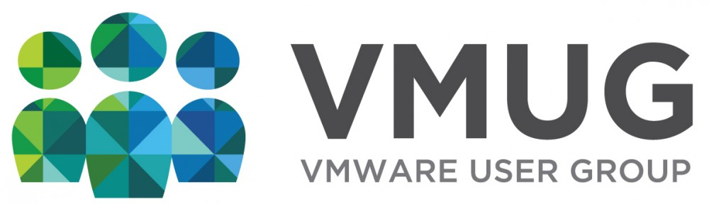
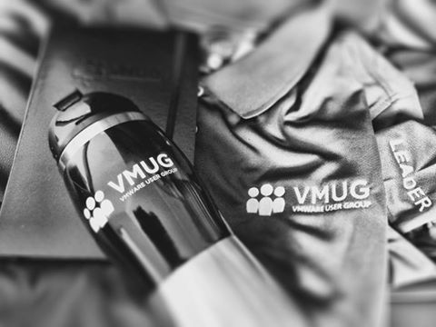
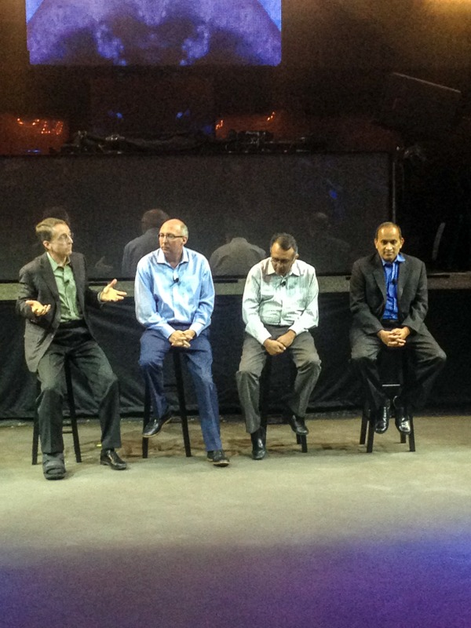
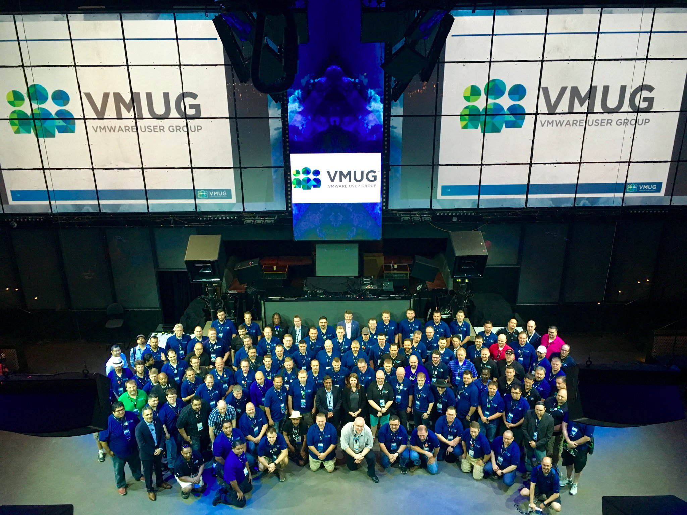
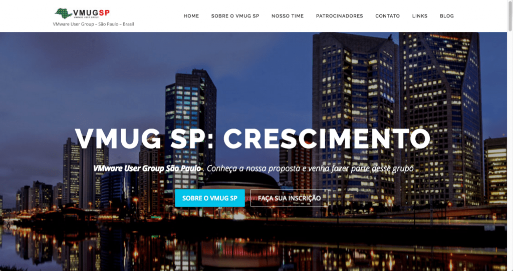

VMUG - VMware User Group - Grupo de Usuários VMware
VMUGCompartilhe esse post nas redes sociais...
Olá Homelabers!
Estou com esse post “meio” pronto já faz algum tempo, mas eu estava esperando algumas confirmações para postar :D
Hoje vou falar para vocês sobre o VMUG!

O VMUG, sigla para VMware User Group ou Grupo de Usuários VMware é uma COMUNIDADE que eu conheci logo que comecei a me envolver com esse mundo VMware, mas que de um tempo para cá acabou entrando na minha vida de uma maneira muito louca.
Quem me conhece sabe, eu sou um cara que adora se relacionar com pessoas. Em um primeiro momento eu fico tímido, caladão, de canto só observando, mas depois que eu “pego amizade a coisa anda”. Eu gosto muito do conceito de COMUNIDADE. Sempre fui muito ativo em fóruns, lista de e-mails, grupos de discussão, etc e a proposta do VMUG me cativou demais.
Eu sempre vi vários posts dos vBloggers falando sobre o VMUG, suas reuniões e eventos e comecei a sondar o que existia no Brasil sobre VMUG. Acabei descobrindo (para minha NÃO surpresa) que o VMUG aqui não tinha “pegado”. Fui atrás de informações e vi que o único VMUG do Brasil que está ativo é o grupo de Brasilia (falo mais sobre eles depois). Fiquei com essa idéia na cabeça e pensando: Como é que São Paulo, a maior cidade do Brasil, onde estão todos os vendors de hardware e software e os melhores profissionais do pais NÃO TEM UM VMUG ativo?
Comecei a amadurecer a idéia de criar um VMUG aqui em Sampa e depois de muito pensar, conversar com pessoas do mercado e estudar sobre o assunto, acabei me candidatando para ser o VMUG Leader de SP. Por coincidência ou obra do destino, mais dois caras de São Paulo estavam conversando com o pessoal do VMUG e um belo dia acabamos por fazer uma reunião e acertar que iriamos reviver o grupo. Esses caras são o Caio Oliveira da VMware e o Fernando Frediani
No final de agosto, fiz o treinamento de Leader e recebi o meu KIT :). Pronto, agora f**** tenho que começar a correr atrás para fazer esse negócio decolar.
[caption id="attachment_2278” align="aligncenter” width="480”] VMUG Leader Kit[/caption]
Mas foi só na VMworld em Las Vegas que tomei ciência do real tamanho e força dessa comunidade. Conheci muita gente do VMUG, participei de uma reunião de lideres do mundo todo que contou com a presença do board da VMware, conversei com o CEO Brad Tompkins (@vmug_ceo) e com o Presidente do VMUG Mariano Maluf (@mjmaluf) e finalmente participei de um painel com outros líderes para discutir as dificuldades de se manter um VMUG ativo. Foi ai que a ficha caiu! CARAMBA! Onde fui me meter!
[caption id="attachment_2199” align="aligncenter” width="600”] Board da VMware (@PGelsinger @ray_ofarrell @raghuraghuram @spoonen) na reunião de lideres do VMUG | VMworld 2016 | Las Vegas[/caption]
[caption id="attachment_2279” align="aligncenter” width="800”] VMUG Leader Meeting | VMworld 2016 | Las Vegas[/caption]
Mas como eu gosto de desafios e estou completamente apaixonado (sim, apaixonado) pela idéia, estou trabalhando duro para que esse negócio se torne uma realidade e o VMUG São Paulo cresça e se torne relevante para a comunidade.
Então é isso pessoal, apresento a vocês o VMUG São Paulo (ou VMUG SAMPA, VMUG SP, VMUG 011). Hoje somos apenas um pequeno embrião, mas quero firmar um compromisso com vocês, em um ano seremos o maior VMUG da América Latina!
Mas afinal, que diabos é esse VMUG?
O VMUG (VMware User Group ou Grupo de Usuários VMware) é uma organização independente, global e voltada para o cliente, criada para maximizar o uso de soluções VMware e de seus parceiros através do compartilhamento de conhecimento, treinamentos, colaboração e eventos. Com mais de 150.000 membros em todo o mundo, é a maior organização para usuários de virtualização do planeta.
Um pouco de história:
O VMUG foi criado em Agosto de 2010 nos Estados Unidos e vem crescendo exponencialmente a cada ano. Antes disso, grupos isolados de usuários operavam em conjunto com a VMware, mas com o rápido crescimento desses grupos, surgiu a necessidade de criar uma organização única independente da VMware e com isso:
* Garantir uma experiência consistente e de alta qualidade para todos os membros do VMUG
* Fornecer uma interface mais eficaz entre a VMware e a base e sua base de clientes
* Criação de uma rede coesa de clientes e parceiros da VMware com uma voz única capaz de criar impacto em produtos e serviços da VMware
* Estabelecimento de uma sistema de apoio e modelo de negócios que permite que os lideres do VMUG local e a VMware irem alem do apoio tático em iniciativas mais estratégicas
VMUG no Brasil
No Brasil o VMUG (por enquanto) tem uma presença bastante discreta, mas estamos trabalhando para que a comunidade cresça e tome corpo e para isso precisamos do apoio de vocês.
Hoje o único VMUG ativo no Brasil está em Brasília e pelo pouco que conversei com os lideres de lá, tem crescido bastante a cada ano.
Agora com o lançamento do VMUG SP, esperamos conseguir reunir forças e em breve poder realizar uma USERCON no Brasil.
Benefícios de ser um membro do VMUG
Em poucas palavras?
NETWORK e CONHECIMENTO.
Existem muitas outras vantagens e eu recomendo que você acesse o site do VMUG SP para ter uma noção mais completa dos benefícios, mas vou resumir aqui:
* Reuniões e palestras e eventos técnicos com apresentações de membros do VMUG, convidados e patrocinadores.
* Fóruns de discussão, troca de idéias e soluções de problemas.
* VMUG ADVANTAGE - O programa [VMware's ](https://www.vmug.com/evalexperience)[EVALExperience](https://www.vmug.com/evalexperience) oferece a você um acesso exclusivo a todos os produtos VMware para uso em um ambiente não produtivo por 365 dias.
* VMUG e-Learning Center - Webcasts ao vivo com interação e sessões de perguntas e respostas com especialistas e parceiros VMware.
* Descontos em treinamentos oficiais da VMware
* Descontos em certificações oficiais da VMware
* Desconto na inscrição para a VMworld
* E muito mais....
Como funciona o VMUG?
Basicamente O VMUG funciona assim: De tempos em tempos (geralmente a cada 3 meses) o VMUG local marca uma reunião para discutir assuntos técnicos. Essas reuniões podem durar o dia todo ou apenas uma noite. Os palestrantes são geralmente membros da comunidade que se dispõem a compartilhar suas experiências e seu conhecimento. Também costumam acontecer palestras de vendors (os sponsors ou patrocinadores) que falam da aplicabilidade prática de seus produtos, convidam clientes para falar de cases de sucesso, etc. A idéia é evitar discursos puramente de marketing ou vendas. O foco é o conteúdo técnico.
Eventualmente acontecem encontros mais informais, chamados vBeers (mas que a gente aqui em São Paulo vai chamar de vBrejas) geralmente patrocinado por um vendor ou até mesmo pelos próprios membros para trocar idéias e bater um papo legal entre NERDS (e claro, fazer networking).
Sponsors/Patrocinadores
Os patrocinadores são muito importantes para o VMUG local, pois eles ajudam com os custos do evento (aluguel do espaço, comida & bebida, etc) e em troca recebem um espaço no evento para divulgar seus produtos e serviços, além de ter acesso direto aos membros da comunidade. Ser um apoiador do VMUG é uma excelente oportunidade para se aproximar da comunidade e divulgar seus serviços.
Em todo mundo, grande empresas e parceiros da VMware participam e apoiam os grupos locais do VMUG.
Para mais informações sobre como se tornar um apoiador do VMUG São Paulo, acesse o link abaixo:
[su_button url=”http://bit.ly/vmugsp-quero-patrocinar” style="flat” background=”#FF0000” size="10” center="yes” radius="0” title="Cadastre-se”]QUERO APOIAR O VMUG SÃO PAULO[/su_button]
Como se associar?
Para** se associar ao VMUG é muito fácil**. Não existe custo algum, **a associação é grátis** e basta preencher um cadastro no site da VMUG e passar a usufruir de todos os benefícios da comunidade. E eu já disse que a associação é TOTALMENTE GRÁTIS? Vai la!
[su_button url=”http://bit.ly/vmugspcadastrese” style="flat” background=”#FF0000” size="10” center="yes” radius="0” title="Cadastre-se”]CADASTRE-SE AGORA[/su_button]
VMUG SÃO PAULO
E para fechar o post, apresento a vocês o VMUG São Paulo:
O Grupo de Usuários VMware de São Paulo (VMUG São Paulo) foi criado para incentivar, apoiar e reunir os usuários de VMware do Estado de São Paulo, Brasil.
Nosso principal objetivo no momento é mostrar as pessoas a existência dessa maravilhosa comunidade chamada VMUG e que ela agora está mais próxima de você que mora em SP.
O plano é realizar uma reunião ainda esse ano, no começo de novembro e no próximo ano iniciar a programação com pelo menos 4 reuniões na capital e talvez algumas em cidades do interior como Campinas, São José dos Campos, etc.
Para saber mais sobre o VMUG acesse o site do VMUG SP em http://www.vmugsp.com.br .
[caption id="attachment_2288” align="aligncenter” width="800”] Site VMUG SP | http://vmugsp.com.br[/caption]
Se você tiver qualquer dúvida, [envie um e-mail para mim ](mailto:contato@vmugsp.com.br?Subject=Dúvidas VMUG São Paulo) ou deixe um comentário nesse post.
E para facilitar as coisas: Ficou interessado no VMUG? Clique no botão abaixo e cadastre-se agora!
[su_button url=”http://bit.ly/vmugspcadastrese” style="flat” background=”#FF0000” size="10” center="yes” radius="0” title="Cadastre-se”]CADASTRE-SE AGORA[/su_button]
Um abraço pessoal e até o próximo post!
Valdecir
Compartilhe esse post nas redes sociais...Valdecir Carvalho
Nerd e pai orgulhoso da Mariana e João. Profissional Sênior de TI com foco em arquitetura de infraestrutura e cloud computing. Blogueiro, podcaster, palestrante, amante de comunidades técnicas, fotógrafo aposentado e adora jogos antigos.
#vExpert · #VMUGLeader · #VUGBrasil · #vBronwBagBrasil · #VeeamVanguard